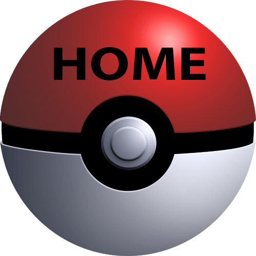

<ion-tabs>
  <ion-fab vertical="bottom" horizontal="center" translucent="true">
    <ion-fab-button tab="home" href="/tabs/home">
      
    </ion-fab-button>
  </ion-fab>

  <ion-tab-bar slot="bottom" class="ion-no-border">
    <ion-tab-button tab="tab-encounters"> </ion-tab-button>

    <ion-tab-button tab="favorites" class="favorites">
      favoritos
      <ion-icon name="bookmarks"></ion-icon>
      <ion-badge></ion-badge>
    </ion-tab-button>

    <svg
      height="50"
      viewBox="0 0 100 50"
      width="100"
      xmlns="http://www.w3.org/2000/svg"
    >
      <path
        d="M100 0v50H0V0c.543 27.153 22.72 49 50 49S99.457 27.153 99.99 0h.01z"
        fill="red"
        fill-rule="evenodd"
      ></path>
    </svg>

    <ion-tab-button tab="category" class="category">
      <ion-icon name="list"></ion-icon>
      <ion-badge></ion-badge>
    </ion-tab-button>

    <ion-tab-button (click)="openExternalUrl()">
      
    </ion-tab-button>
  </ion-tab-bar>
</ion-tabs>

<!-- <ion-tabs>
  <ion-tab-bar slot="bottom">
    <ion-tab-button tab="favorites" href="/tabs/favorites">
      <ion-icon aria-hidden="true" name="bookmarks"></ion-icon>
      <ion-label>Favoritos</ion-label>
    </ion-tab-button>

    <ion-tab-button tab="home" href="/tabs/home">
      <ion-icon aria-hidden="true" name="home"></ion-icon>
      <ion-label>Home</ion-label>
    </ion-tab-button>

    <ion-tab-button tab="category" href="/tabs/category">
      <ion-icon aria-hidden="true" name="list"></ion-icon>
      <ion-label>Categorias</ion-label>
    </ion-tab-button>
  </ion-tab-bar>
</ion-tabs> -->
